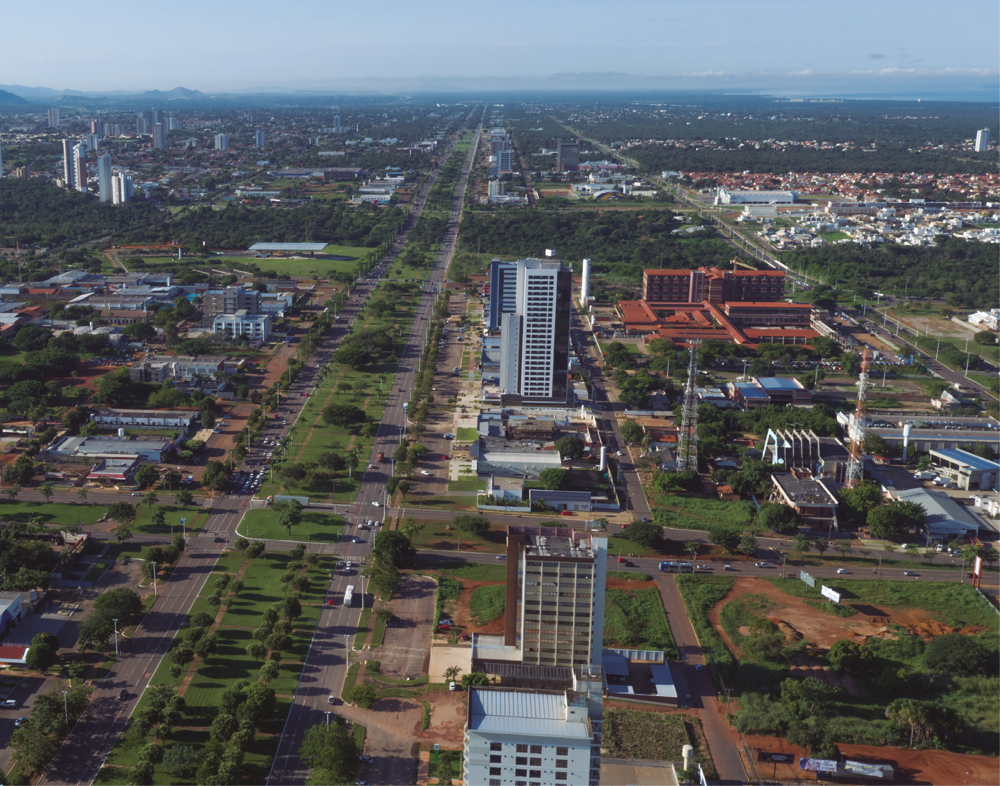

UNIDADE 2 – Retas e ângulos
Palmas, Tocantins, 2018.
Tocantins é o mais novo dos estados brasileiros. Foi criado em 1988, com a promulgação da Constituição Brasileira.
Em 1989 começou a construção da capital, Palmas, que em 1990 passou a ser a sede do governo do estado, a partir de então capital de Tocantins.
Localizada à margem direita do Rio Tocantins, essa cidade foi criada e planejada unicamente para ser a capital. Possui uma arquitetura arrojada, com avenidas largas e divisão urbanística caracterizada por grandes quadras comerciais e residenciais.
35
Retas e ângulos
CONVERSE
- No croqui da cidade de Palmas, o que podemos observar em relação às características das ruas?
- Você conhece outras cidades brasileiras que foram planejadas? Cite o nome de algumas.
- As cidades que são planejadas apresentam algumas características próprias. Em sua opinião, quais são as características de uma cidade planejada?